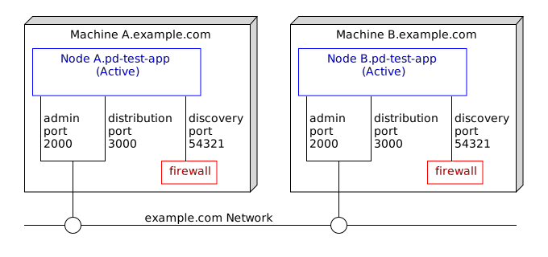
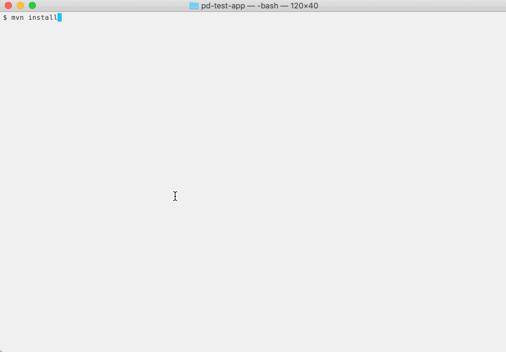

Docker : 2-node active active with proxy discovery
Testing proxy discovery configurations can be difficult since often in test hardware, networks do not block the discovery messages. This sample describes how to use docker to test proxy discovery.
- Machines and nodes
- Define the application definition configuration
- Define the node deployment configuration
- Changes to the default docker configurations
- Building this sample from the command line and running the integration test cases
Machines and nodes
In this sample we name the docker machines as A.example.com, which hosts the StreamBase node A.pd-test-app, and B.example.com, which hosts the StreamBase node B.pd-test-app.

Define the application definition configuration
For running in a docker container, we use System V shared memory for performance :
name = "pd-test-app"
version = "1.0.0"
type = "com.tibco.ep.dtm.configuration.application"
configuration = {
ApplicationDefinition = {
execution {
nodeTypes {
docker {
sharedMemory = {
memoryType = SYSTEM_V_SHARED_MEMORY
}
}
}
}
}
}
Define the node deployment configuration
In this sample we include the proxyDiscovery setting and specify hostnames and ports so that the nodes can be made aware of each other.
name = "pd-test-app"
version = "1.0.0"
type = "com.tibco.ep.dtm.configuration.node"
configuration = {
NodeDeploy = {
nodes = {
"A.pd-test-app" = {
nodeType = docker
engines = {
pd-test-ef = {
fragmentIdentifier = "com.tibco.ep.samples.docker.pd-test-ef"
}
}
communication = {
administration = {
address = ${A_HOSTNAME:-A.example.com}
transportPort = ${A_ADMINPORT:-2000}
}
distributionListenerInterfaces = [ {
address = ${A_HOSTNAME:-A.example.com}
dataTransportPort = ${A_DATATRANSPORTPORT:-3000}
} ]
proxyDiscovery = {
remoteNodes = [ ".*" ]
}
}
availabilityZoneMemberships = {
default-cluster-wide-availability-zone = {
}
}
}
"B.pd-test-app" = {
nodeType = docker
engines = {
pd-test-ef = {
fragmentIdentifier = "com.tibco.ep.samples.docker.pd-test-ef"
}
}
communication = {
administration = {
address = ${B_HOSTNAME:-B.example.com}
transportPort = ${B_ADMINPORT:-2000}
}
distributionListenerInterfaces = [ {
address = ${B_HOSTNAME:-B.example.com}
dataTransportPort = ${B_DATATRANSPORTPORT:-3000}
} ]
proxyDiscovery = {
remoteNodes = [ ".*" ]
}
}
availabilityZoneMemberships = {
default-cluster-wide-availability-zone = {
}
}
}
}
availabilityZones = {
default-cluster-wide-availability-zone = {
dataDistributionPolicy = "default-dynamic-data-distribution-policy"
}
}
}
}
Changes to the default docker configurations
The base image Dockerfile is updated to include the sudo tool and its configuration :
RUN yum --assumeyes install \
sysstat \
gdb \
java-1.8.0-openjdk \
zip \
unzip \
perl \
net-tools \
iptables \
tc \
sudo \
&& yum clean all
...
RUN echo "${USER_NAME} ALL=(ALL) NOPASSWD: ALL" >> /etc/sudoers
The start-node script is updated to set firewall rules to drop in-bound discovery :
sudo iptables -I INPUT ! -s ${HOSTNAME} -p udp --dport 54321 -j DROP
The maven pom.xml file is updated to detect if docker is installed :
<properties>
<dockerDomain>example.com</dockerDomain>
<skipApplicationDocker>true</skipApplicationDocker>
<skipStreamBaseDockerBase>true</skipStreamBaseDockerBase>
<skipDockerTests>true</skipDockerTests>
</properties>
...
<!-- if docker is available, build docker projects -->
<profile>
<id>Docker in local</id>
<activation>
<file>
<exists>/usr/local/bin/docker</exists>
</file>
</activation>
<properties>
<skipApplicationDocker>false</skipApplicationDocker>
<skipStreamBaseDockerBase>false</skipStreamBaseDockerBase>
<skipDockerTests>${skipTests}</skipDockerTests>
</properties>
</profile>
<profile>
<id>Docker in bin</id>
<activation>
<file>
<exists>/usr/bin/docker</exists>
</file>
</activation>
<properties>
<skipApplicationDocker>false</skipApplicationDocker>
<skipStreamBaseDockerBase>false</skipStreamBaseDockerBase>
<skipDockerTests>${skipTests}</skipDockerTests>
</properties>
</profile>
<profile>
<id>Docker in C:</id>
<activation>
<file>
<exists>C:\Program Files\Docker\Docker\resources\bin\docker.exe</exists>
</file>
</activation>
<properties>
<skipApplicationDocker>false</skipApplicationDocker>
<skipStreamBaseDockerBase>false</skipStreamBaseDockerBase>
<skipDockerTests>${skipTests}</skipDockerTests>
</properties>
</profile>
and include running epadmin display cluster when the nodes are started - this shows if the nodes are connected to each other via the proxy discovery configuration :
<exec>
<postStart>epadmin servicename=B.${project.artifactId} display cluster</postStart>
</exec>
Building this sample from the command line and running the integration test cases
Use the maven as mvn install to build from the command line or Continuous Integration system :
